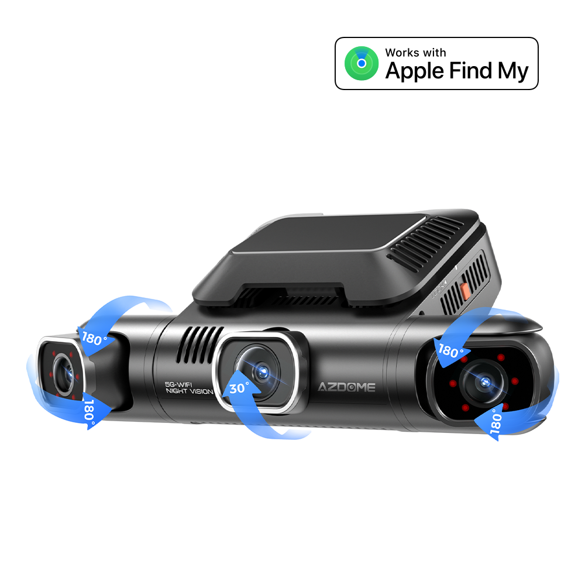

Manufacturer model photo. Australian bundle to confirm. Select an image to view it in full.
AZDOME / Dash cameras
M660 MAX
Price and stock to confirm
SONY STARVIS2
Prepare an enquiry. Nothing is ordered or sent automatically.
Launch selection, sellable variants, price, stock and Australian supply terms need approval.
Supplied specifications
- SONY STARVIS2
- 4-CH: 4K+1080P+1080P+4K HDR
- 3.0'' Screen-
- Bluetooth
- 5G Wi-Fi
- Built-in GPS
- Apple Find My (iPhone/ipad/Mac/Apple Watch)
- 4G Box (optional)
- IR Cut -
- AI Captures
- HDR (Rear)
- Ethernet Rear Cam
- IR Night Vision
- Super Capacitor
- EN Voice control
- 128GB TF Card
Source: PREVORA Australian product workbook, October 2026. Sheet DASH CAM (AZDOME_LNDU), row 9. Local compatibility and bundle contents still need confirmation.